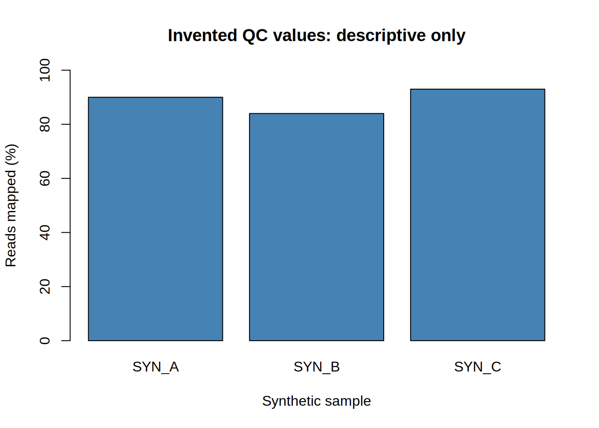

Research Reporting and Interpretation
Nasir Mahmood Abbasi, PhD
Bioinformatics Educator

A useful omics result has a traceable path from input data and analysis choices to the figure and the claim. Use the worked reporting workflow below to document that path, then check that each interpretation stays within what the design can support.
Format: Conceptual guide. For learners who already have a small omics result or QC plot, this lesson walks you through documenting its provenance, drafting a figure legend, and separating observation from interpretation and limitation. The RNA-seq pipeline commands are illustrative patterns, not a supplied or executable end-to-end analysis. A separate, runnable R Markdown reporting exercise uses only synthetic QC values.
Learning objectives and prerequisites
By the end of this lesson you will be able to:
- Write a concise, reproducible methods paragraph that lists data provenance, software and version numbers, key parameters, and where scripts are stored.
- Compose figure legends that report dataset, visual encodings, preprocessing, sample counts, and the statistical summary shown (observation vs interpretation).
- Distinguish observation, interpretation, and limitation in results reporting, and explicitly report negative or ambiguous outcomes.
- Package provenance (scripts, environment spec, checksums) so others can validate your results.
Prerequisites
- Completed "Data Visualization Fundamentals" or equivalent experience creating and exporting at least one plot.
- A small analysis result or QC plot to describe (for example: a per-sample QC table and one summary plot).
- Basic command-line familiarity and a git repository for your project.
Before you begin: use the project root as your working directory and confirm the inputs listed below exist, substituting your actual project paths. This lesson does not supply a sample sheet, biological counts, plot, STAR index, or project-specific differential-expression script. The separate R Markdown reporting exercise supplies only a tiny synthetic QC table. If you do not have analysis outputs yet, complete an analysis workflow first; do not treat the placeholder accessions, observations, or filenames below as real data.
Why reproducible reporting and careful interpretation matter
Computational analyses generate outputs, but a result only becomes scientific knowledge when other researchers can (1) identify the exact inputs and steps used, (2) reproduce the outputs, and (3) see how the evidence supports or fails to support the claims. Poor reporting creates barriers to reuse, obscures sources of error, and inflates confidence in tentative findings.
Clear reporting also helps reviewers and collaborators evaluate whether a finding is robust across software versions, reference data, or parameter choices. In omics, differences in reference genomes, annotation releases, normalization methods, or filtering rules can change results substantially. The goal of this lesson is to give practical, reproducible guidance for writing methods, figure legends, and interpretation text that are useful, honest, and actionable.
Primary report workflow: assemble and knit an R Markdown document
For a reproducible report, start with the downloadable R Markdown source, its synthetic QC table, and the accompanying BibTeX reference file. This is a small report-assembly exercise, not an RNA-seq workflow. The input is invented teaching data and does not represent biological measurements.
- Make a fresh project folder. Place the
.Rmdandreferences.bibin its root, and put the CSV atdata/synthetic_qc.csv. Keep a separateresults/directory for knit output. - Use R with the
rmarkdownandknitrpackages plus Pandoc. RStudio includes Pandoc; with standalone R, checkRscript -e 'rmarkdown::pandoc_available()'. If the packages are not installed, install them in the R environment before rendering; the report itself does not install packages. - From the project root, knit the source with
Rscript -e 'rmarkdown::render("research-reporting-workflow.Rmd", output_file = "research-report.html", output_dir = "results")', or open the.Rmdin RStudio and choose Knit. Inspect the HTML, the schema-validation messages, figure, and CSV outputs underresults/.
The front matter declares a title, author, knit date, HTML output, and bibliography. The report checks the input column names and order, required identifiers, numeric types and ranges before summarizing it. A deliberate schema change should stop the knit instead of being silently repaired. The last section records R, rmarkdown, knitr, Pandoc, and session information. A knit date is the report-generation date, not the sample collection, data retrieval, or analysis date.
Citation truth: the example cites the R Markdown Cookbook as documentation for the report tool, not as evidence about the synthetic QC values. The fixture has no scientific source citation because its values were invented. For real data, cite the originating accession or source and the publications, protocols, and software actually used. Verify each bibliography entry against its source; do not retain template citations that do not support your statements. Review the rendered citations and bibliography before sharing.
The knitted HTML, plots, and CSVs are generated outputs. Keep only source code and teaching data in the public repository; do not add private project data or execution outputs. Quarto may be used as an optional alternative when a project specifically requires it, but it does not replace this lesson's primary, runnable .Rmd workflow.
Reproducible sequential workflow (example)
This is a reporting and command-pattern example, not a complete, executed RNA-seq pipeline. The sample names, accession, thresholds, and example observations below are illustrative placeholders, not measured results. Replace them with values from your analysis and verify each command against the versions installed. Paths are relative to a project directory tracked with Git.
Files you should have before starting:
data/raw/GSE123456_sample_sheet.csv: sample metadata (sample ID, condition, file paths or accessions)data/raw/FASTQ/*_R1.fastq.gzand*_R2.fastq.gzor note that FASTQ are in a public archive (GEO/SRA)results/counts/gene_counts.tsv: gene-level counts (or a script that generates it)results/figures/qc_plot.png: example QC plot to describescripts/: analysis scripts (R, Python, shell)provenance/environment.yaml: conda environment spec (created in step 2), orrenv.lock/sessionInfo.txtdescribing R packages
1. Record provenance: capture the repository state and checksums
Record the commit used for the analysis, whether the working tree had changes, and checksums for selected outputs. Run these commands at the same code revision that generated the results; for older results, check out the actual generating revision first. Create the provenance directory. Keep sensitive paths and metadata out of public files; review records before sharing.
# show the exact commit used to generate results
mkdir -p provenance
git rev-parse HEAD > provenance/commit.txt
# record the output of git status (uncommitted changes) so you can see differences
git status --porcelain > provenance/git_status.txt
# record the latest commit message(s)
git log --oneline -n 5 > provenance/git_log_recent.txt
# compute SHA-256 checksums for important outputs (integrity only; not anonymization)
sha256sum results/counts/gene_counts.tsv > provenance/checksums.txt
sha256sum results/figures/qc_plot.png >> provenance/checksums.txt
What these commands produce:
provenance/commit.txt: the commit hash at the time these commands ran; it identifies the committed snapshot, not any uncommitted editsprovenance/git_status.txt: indicates whether working tree had uncommitted changesprovenance/checksums.txt: checksums used to verify file integrity
A checksum does not anonymize a file or establish that it is safe to share. Review the underlying outputs, filenames, paths, and accompanying metadata for sensitive or identifying information before distribution.
2. Export software environment and versions
For R-based analysis, capture package versions with sessionInfo() or an renv.lock. For conda, save an environment specification and, when useful, a platform-specific explicit package list. `--no-builds` omits build strings; it does not make an environment platform-independent. Example:
# from your conda environment named 'omics-env'; explicit specs are platform-specific
conda list --explicit > provenance/conda_explicit.txt
conda env export --no-builds > provenance/environment.yaml
What these files produce:
provenance/environment.yaml: environment specification without package build strings; it can be easier to resolve elsewhere, but it does not guarantee the same solve or bitwise reproductionprovenance/conda_explicit.txt: explicit package builds tied to the exporting platform and channels; portability to another operating system or architecture is limited
Check before continuing: inspect provenance/environment.yaml and confirm it names the intended environment and packages; compare the recorded package versions with those used for the analysis. A successful export documents an environment specification, not that it can be recreated or that the analysis is validated. Stop if you cannot identify the environment that generated the result, and resolve that provenance gap before claiming reproducibility. For R projects, record the actual output of sessionInfo() or the lockfile used rather than assuming these conda commands capture R dependencies.
3. Reproducible data-access statement
Record where the raw data were obtained, the exact accession identifiers, and the download date. If the data are public (recommended), include the accession and a checksum for the downloaded files. Example text you can paste into a methods paragraph:
Data: Raw sequencing files for the 12 tumor/normal pairs were downloaded from GEO (GSE123456) on 2026-06-01. Local copies are stored in data/raw/; checksums recorded in provenance/checksums.txt.4. Example pipeline steps (alignment and counts): reproducible commands
This example uses STAR for alignment and featureCounts for gene counting, counting paired-end fragments rather than individual mates. It assumes paired FASTQ files and a STAR index already built from the same GRCh38 FASTA and GTF used for counting. The commands below only record reference filenames; they do not build or validate that index. STAR alignment and featureCounts options depend on data design and software version, so treat this as a command sketch and inspect each tool's logs and output before analysis.
# index directory (performed once; record version of genome FASTA and GTF)
# do NOT overwrite an existing index used previously unless you update the methods
mkdir -p reference/GRCh38/index provenance results/alignment results/counts
# Build the index separately with STAR --runMode genomeGenerate, --genomeDir,
# --genomeFastaFiles, and --sjdbGTFfile; record the actual commands and versions.
# Do not proceed unless that completed index matches the FASTA/GTF below.
# Record the reference files used
echo "GRCh38 primary assembly FASTA: reference/GRCh38/GRCh38.primary.fa" > provenance/reference_files.txt
echo "Annotation GTF: reference/GRCh38/gencode.v46.annotation.gtf" >> provenance/reference_files.txt
# align sample with STAR (example for one paired-end sample)
STAR \
--runThreadN 8 \
--genomeDir reference/GRCh38/index \
--readFilesIn data/raw/SampleA_R1.fastq.gz data/raw/SampleA_R2.fastq.gz \
--readFilesCommand zcat \
--outFileNamePrefix results/alignment/SampleA. \
--outSAMtype BAM SortedByCoordinate
# Produce gene counts with featureCounts
featureCounts -T 8 -p --countReadPairs \
-a reference/GRCh38/gencode.v46.annotation.gtf \
-o results/counts/gene_counts.tsv \
results/alignment/*.bam
What these commands produce:
- With this prefix, STAR writes
results/alignment/SampleA.Aligned.sortedByCoord.out.bamfor this sample, alongside log and other output files. Check the STAR log and confirm the BAM exists before counting. results/counts/gene_counts.tsv: featureCounts table with annotation columns and one count column per input BAM; the summary is written separately asgene_counts.tsv.summary. A single BAM gives a single sample column, not a multi-sample matrix.
5. Differential expression (DE) with explicit parameters
Use an analysis script and record its exact revision, inputs, design formula, contrasts, filtering, and R/package versions. This invocation assumes the named script exists and accepts these options; it is a project-specific interface, not a built-in DESeq2 command. `tee` captures the pipeline text; add `set -o pipefail` in a bash script if you need the shell to propagate an upstream non-zero exit status.
# run differential expression (DE) script and capture session info
set -o pipefail
Rscript scripts/de_analysis/run_de_pipeline.R \
--counts results/counts/gene_counts.tsv \
--meta data/raw/GSE123456_sample_sheet.csv \
--outdir results/de \
2>&1 | tee provenance/run_de_pipeline.log
Inside scripts/de_analysis/run_de_pipeline.R the script should:
- explicitly set the R package versions used (print
sessionInfo()) - document the statistical model (for example: design = ~ donor + condition)
- specify multiple testing correction (Benjamini-Hochberg) and thresholds used (adjusted p-value < 0.05, |log2FC| > 1)
What the invocation produces:
results/de/de_results.tsv: table of genes with fold changes and adjusted p-valuesprovenance/run_de_pipeline.log: script stdout/stderr includingsessionInfo()
Output inspection and interpretation
After running the pipeline, inspect the outputs systematically. The goal of inspection is to separate direct observations (measured facts) from interpretation (biological meaning) and to note limitations.
What to look for in QC and counts
- Counts distribution per sample (library size): check for outliers, very low-depth libraries, or samples with anomalous mapping rates.
- Gene detection rate: number of genes with non-zero counts per sample.
- Principal component analysis (PCA) or multidimensional scaling: do samples cluster by expected experimental variable (e.g., condition) or by batch/donor?
- Differential expression: number of genes passing threshold and effect sizes (log2 fold changes); examine volcano plots and MA plots.
Example observations you might report (phrased as observations, not conclusions):
- Observation: Median mapping rate across samples was 92% (range 81–96%).
- Observation: In this hypothetical example, samples are separated on PC1 by donor labels; inspect explained variance and sample metadata before deciding whether this pattern dominates the analysis.
- Observation: In this hypothetical example, 153 genes meet the stated adjusted-p-value and absolute log2 fold-change cutoffs; the number is illustrative, not a result to expect from another dataset.
How to phrase interpretation and limitations:
- Interpretation: The observed genes are enriched for annotations associated with oxidative phosphorylation in this hypothetical analysis. This association generates a hypothesis; enrichment depends on the tested gene universe, annotation source, and analysis choices, and does not establish pathway activity or treatment causality.
- Limitation: Donor and treatment are not balanced in this example, so their effects may be difficult or impossible to distinguish. Adding donor to a model cannot recover a treatment effect when the design is fully confounded; inspect the design matrix and report the limitation rather than treating a covariate as a remedy.
Important: Do not state causal or definitive claims unless the design supports them. For example, do not say “treatment causes pathway activation” if the experiment is observational or if confounders were not controlled.
Figure legends: an explicit template
A legend should identify the plotted quantity, experimental unit, groups, visual encodings, preprocessing relevant to the panel, sample counts, and the statistic or test shown. State exclusions and whether p-values were adjusted. The example below is a template only: the arbitrary mitochondrial-fraction cutoff and unadjusted test are not recommendations. Do not call cells and biological samples the same unit, and do not imply a cutoff was prespecified unless it was set before inspecting outcomes.
Template legend (modify values):
Figure 1. [Synthetic teaching template; replace every bracketed item.] Mitochondrial read fraction by [group]. Each point represents one [cell or biological sample; specify unit] ([n] per group). Points show [summary/individual observations]; bars show [median and IQR]. Fraction was calculated as mitochondrial counts divided by [denominator] after [filtering rule]. [State any threshold and whether it was prespecified; report exclusions and resulting n.] Group comparison used [test and sidedness]; report [raw or adjusted] p-values and the method for multiple-testing correction, if applicable. See Methods for sample metadata and processing details.Troubleshooting
Below are common symptoms, likely causes, and suggested fixes.
Symptom: One or two samples have very low library size (few mapped reads).
- Likely causes: failed sequencing lane, incorrect sample demultiplexing, corrupted FASTQ files.
- Fixes: inspect raw FASTQ quality with FastQC; check read counts in alignment logs; re-download raw files from archive; if the sample is irrecoverable, record the exclusion with rationale and update sample counts in methods.
Symptom: PCA separates samples by batch or processing date, not biological condition
- Likely causes: technical variation, a design confounded with condition, or both. PCA is exploratory and does not by itself identify a causal source of variation.
- Checks: review sample labels, processing records, and the design matrix. Include a batch term only when the design can estimate it separately from condition. If batch and condition are completely confounded, the effects cannot be separated from these data; state the limitation and do not claim that adding a covariate removes it. More balanced data may help in a future study.
Symptom: Very few or zero differentially expressed genes.
- Likely causes: low statistical power (small n), over-stringent filtering, incorrect model specification.
- Fixes: check model design matrix for coding errors; increase sample size if possible; report negative results transparently; consider pre-specifying effect size of interest and presenting effect-size estimates with confidence intervals rather than only p-values.
Limitations, version and reference-data caveats, and responsible-use notes
Limitations and caveats should be explicit in a short subsection of your report. List key dependencies and their versions, and call out any results that are sensitive to these choices.
- Reference data: Specify the genome assembly and annotation release (for example, GRCh38, GENCODE v46). Different annotation releases change gene models and counts; re-running with a different GTF can alter downstream DE lists.
- Software versions: Record exact versions (e.g., STAR v2.7.11b, featureCounts v2.0.6, R 4.3.2, DESeq2 v1.42.0). Even minor version changes can affect results; include
sessionInfo()or an environment export in provenance files. - Parameter sensitivity: Report thresholds used (filtering, p-value and fold-change cutoffs). Where possible, show how results change under alternative reasonable parameter choices (sensitivity analysis).
- Privacy and data sharing: Do not publish identifiable human-level data or sensitive subject metadata. Share derived summary tables or synthetic examples when raw data cannot be shared; clearly note access restrictions and how others can request access.
Responsible-use note: Avoid overstating clinical or biological implications beyond the scope of the experimental design. Clearly separate what the data directly show from hypotheses that require orthogonal validation (orthogonal assays, replication cohorts, causal experiments).
Next-step checklist (concise)
- Write a single-paragraph Methods summary including data accession, download date, reference genome/GTF release, and software (with versions).
- Record the script path, commit hash, and any working-tree changes. Do not use an unexpanded shell expression as if it were a commit value in the manuscript.
- Attach environment specification (
provenance/environment.yaml) and checksums (provenance/checksums.txt). - Draft figure legends using the template above; include n, preprocessing, and the exact statistic plotted.
- Write an Observation / Interpretation / Limitation statement for each main result.
- Run sensitivity checks justified by the analysis plan. Explain why each alternative is reasonable; do not choose settings solely because they produce a preferred result.
What this run produced
This is the actual plot embedded when the supplied R Markdown report was knitted. The values are synthetic teaching inputs, not experimental observations.

Run details and limits
The supplied document rendered with R 4.3.3, rmarkdown 2.25, knitr 1.45, and Pandoc 3.1.3 on Linux. Its schema checks, three-row descriptive summary, two CSV exports, and embedded plot completed.
This tests document assembly and input validation. It does not validate an upstream analysis, citations for biological claims, or execution on another operating system. The knitted HTML and raw execution logs are not published. Inspect the execution evidence.
References
- GEO: Gene Expression Omnibus, a public repository for high-throughput functional genomics data.
- DESeq2 (Bioconductor): commonly used R package for differential expression analysis and guidance on model specification.
- ENCODE Project: functional-genomics experiments, data standards, and assay-specific guidelines; this is distinct from the MINSEQE reporting standard.
- GATK (Broad Institute): best-practice workflows and documentation relevant to variant calling reproducibility.
- Sandve et al., “Ten Simple Rules for Reproducible Computational Research” (PLOS Computational Biology), with practical principles that apply across omics analyses.
Author: Nasir Mahmood Abbasi, PhD - Category: Foundations & Prerequisites